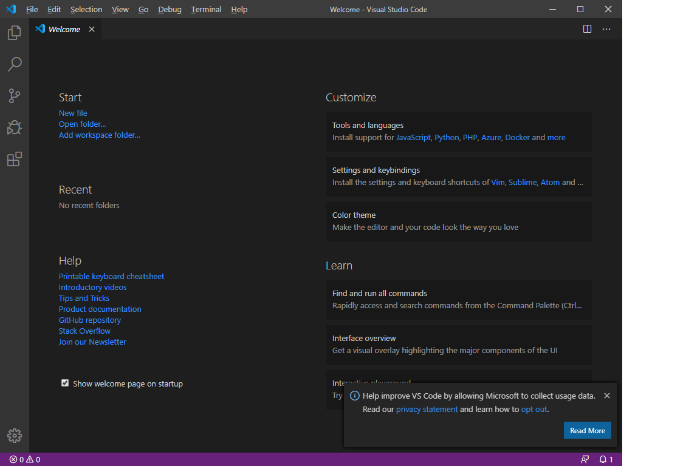
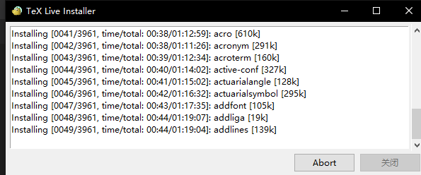
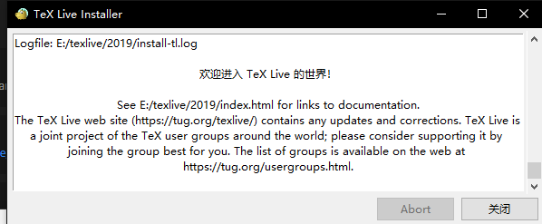
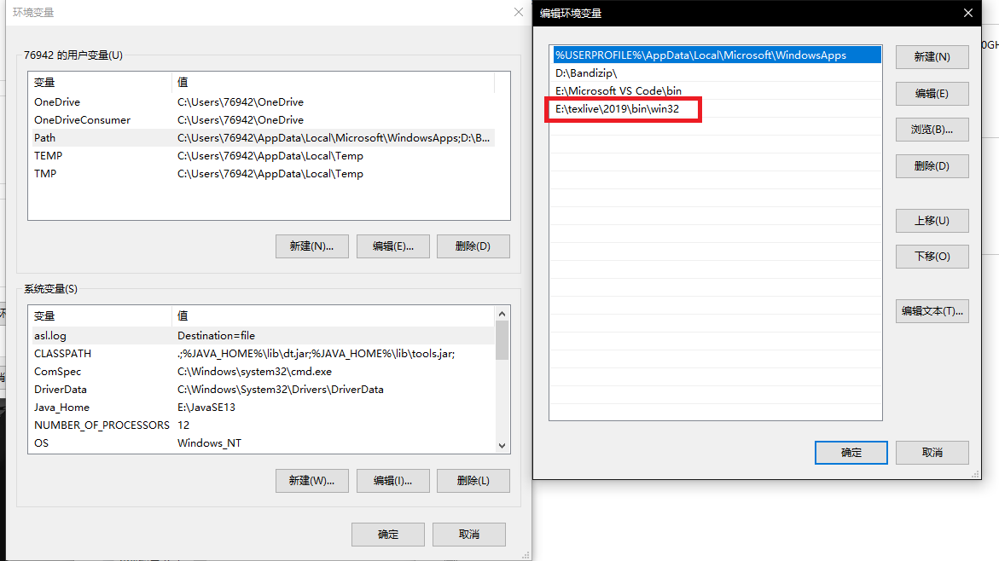
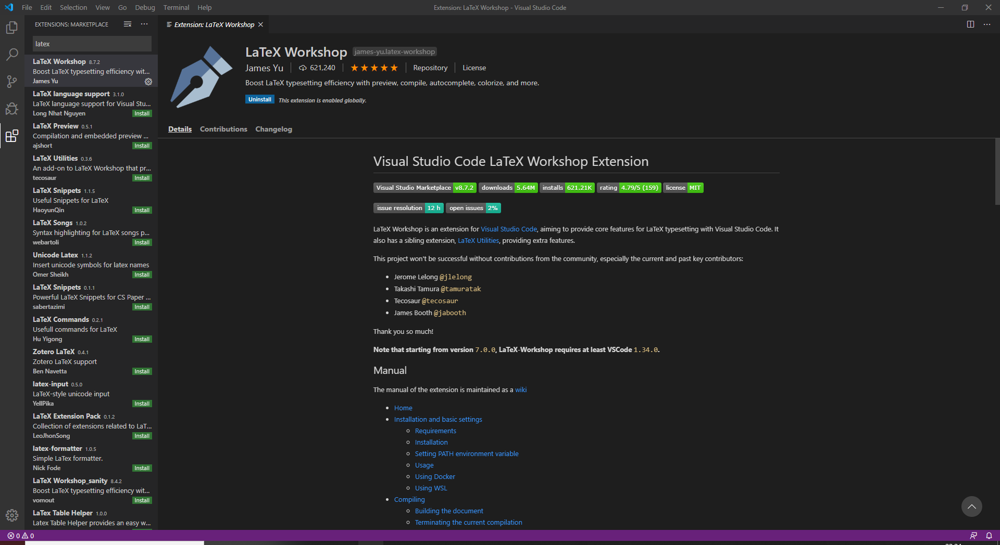
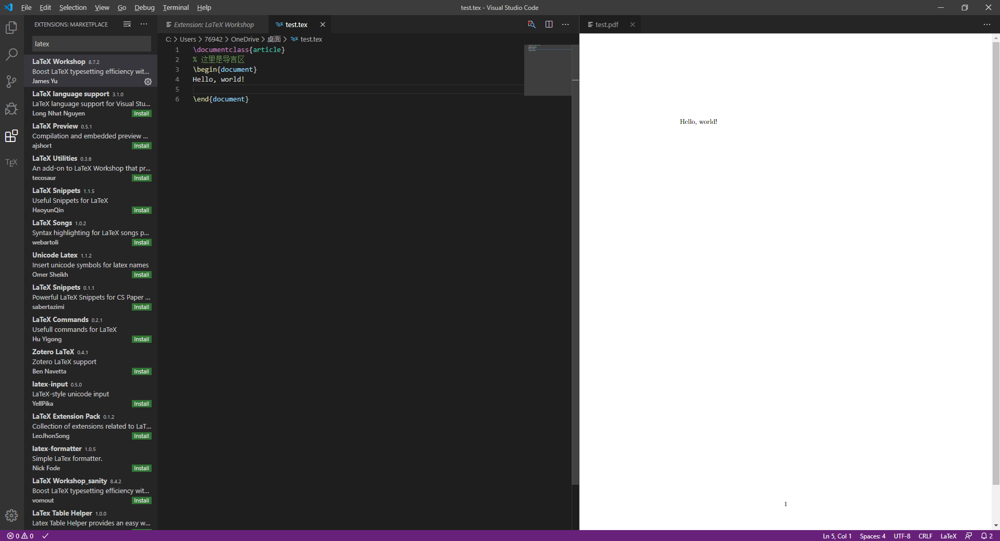
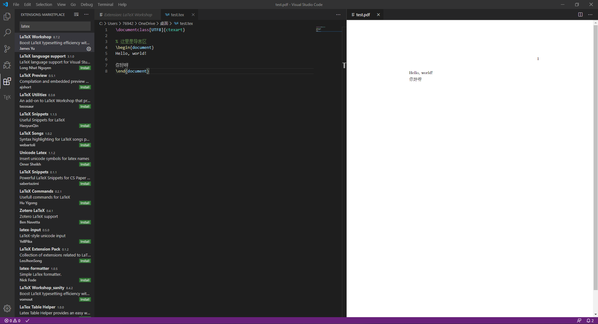

VScode+texlive打造win10下的Latex编译环境
一时兴起
  最近开始准备学校的毕业设计相关的事情了，在写开题报告的时候看到密密麻麻整整七页的论文格式要求，瞬间头都大了，虽然引用文献部分能通过Mendeley直接找到国标进行排版，而且我引用的基本都是外文文献，一查doi就可以自动导入，但那些关于标点，字体，页间距的要求，让我都不敢随便下笔。
  所以毅然决然打开google，学习怎么使用VScode+tex进行编写环境配置，因为曾经在linux上用atom+texlive的组合进行过搭建，所以心里觉得应该或多或少会遇到一些麻烦，没想到Windows下一路都是下一步下一步，除了环境变量那里可能有些人不知道以外，简直就是傻瓜操作。不过既然图都截了，干脆就写成blog以备哪天不知道要重装系统了重新设置用。
安装VScode+texlive
  选用VScode的原因在于习惯了微软家VScode的高颜值，原本文本编辑器主力用的是Notepad++，但它浓郁的上个年代的代码高亮让我在第一次接触到VScode之后就转投VScode的怀抱。没办法，这个微软，还是太香了
VScode安装
  登录这个网站，直接下载，安装，打开能看到这个画面就ok了：

texlive安装
  登录这个网站，这个网站页面真的…一言难尽。找到其中的超链接:install-tl-windows.exe,下载，解压，安装。安装的过程会十分~~漫~~长~~,你会看到下面这个窗口慢慢地滚动安装组件：

  我装了1个多小时才装完，看到这个窗口就差不ok了：

  最后在我的电脑右键->属性->高级系统设置->环境变量->用户的用户变量->Path里看到安装位置\texlive\年份\bin\win32就算ok了，如果没有找到，可以试着去系统变量里面的path找一下，如果还没有，请手动添加安装位置的\bin\win32文件夹进系统变量。我的变量：

配置VScode和一些小技巧
在VScode里面安装拓展插件Latex Workshop
  打开VScode，点击左下角扩展选项或者Ctrl+Shift+X打开扩展库,搜索Latex Workshop,点击安装，等一会就安装好了。

使用技巧
  对.tex进行编译使用快捷键：crtl+alt+b，有问题会进行报错，无问题会在相同的文件夹生成PDF文件。
  在VScode里进行预览按钮使用快捷键：crtl+alt+v，可以预览.tex生成的pdf文件。
一个helloworld文档
  因为要对安装好的编译环境进行测试，这里分别对英文tex文档和中英混合tex文档进行测试。
  对纯英文文档的测试可以输入以下代码：
1 | \documentclass{article} |
  使用编译和查看，结果如下：

  对存在中文的文档的测试，需要调用ctexart包，并使用UTF-8编码实现：
1 | \documentclass[UTF8]{ctexart} |
  使用编译和查看，结果如下:

在tex中更改引用文献的格式
  因为我们学校的文献著录要求是使用国标:GB/T 7714-2015，所以要在导言取区域添加如下命令才能成功更改著录格式：
1 | \usepackage[authoryear]{gbt7714} |
  具体文献的输入格式请参考http://ctan.math.illinois.edu/biblio/bibtex/contrib/gbt7714/gbt7714.pdf 。
自用模板
一个英文LaTex文档模板
1 | \documentclass{article} |
效果：
一个英文Beamer演讲模板
1 | \documentclass{beamer} |
效果：